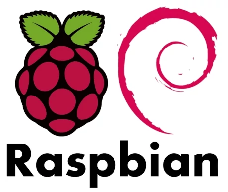
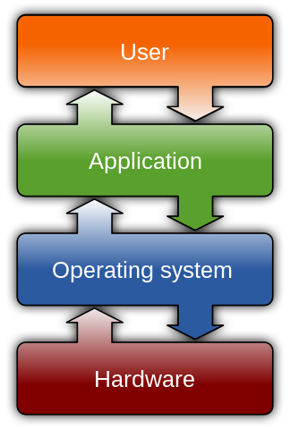
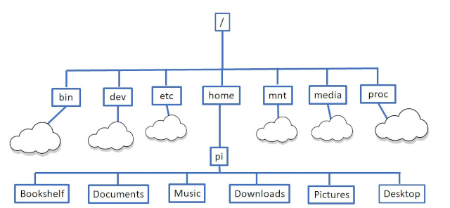

TP2-ARCH-02 : Le nano-ordinateur RPi
Contents

TP2-ARCH-02 : Le nano-ordinateur RPi#
Objectifs pédagogiques#
Prise en main d’un Raspberry Pi 4
Explorer le système d’exploitation Linux
Connaître le système de fichier UNIX
Acquérir les bases d’un language de scripting avec BASH
Connaître les différents outils de développement à disposition
Qu’est-ce qu’un Raspberry Pi (RPi)#
Le Raspberry Pi est un projet développé à l’origine par l’Université de Cambridge en Angleterre. L’objectif principal du projet était de démocratiser l’accès aux ordinateurs. Les contraintes liées étaient donc :
Utilisation de matériel à bas coût (notamment le processeur)
Design extrêmement compact : taille d’une carte de crédit
Système d’exploitation et logiciels provenant du monde des logiciels libres
Le résultat est le suivant (ici la version 4 que nous allons utiliser dans ce TP)

Son prix à l’unité est de quelques dizaines de francs suisses auxquels il faut ajouter un écran (HDMI), un clavier et une souris.
Composants MATÉRIELS du Raspberry Pi#
L’architecture du RPi suit celle de tous les ordinateurs classiques actuels : les laptops, les ordinateurs de bureau, les smartphones, etc.. Cette architecture est nommée Architecture de Von Neumann.

Elle décompose l’ordinateur en 4 parties distinctes :
Unité Arithmétique et Logique (Arithmetic and Logical Unit ALU en anglais). Effectue les opérations du programme
Unité de contrôle. Se charge du séquençage des opérations
Mémoire. Elle contient à la fois les opérations du programme et les données
Des entrées et sorties.
Processeur#
Le processeur, appelé aussi Unité Centrale de Calcul, est le composant électronique qui traite l’ensemble des instructions en utilisant les données localisées (1) dans ses mémoires cache ou (2) dans la mémoire centrale (RAM).
Sur un Raspberry Pi, c’est l’architecture ARM qui a été choisie.
Le processeur est composé de :
Une horloge. Elle est responsable de la synchronisation des flux de calculs et de données
Des Unité Arithmétique et Logique. Ces ALU permettent de traiter les instructions du programme
Des registres. Ce sont des mémoires de très petite taille servant à stocker les variables du programme.
De trois BUS. Un bus permet de transmettre des données :
Le bus de données. Permet de transmettre les donnée de et vers le processeur
Le bus d’adresses. Permet de connaître la position d’une donnée (dans les registres ou la mémoire)
Le bus de contrôle. Permet de gérer les différentes interruptions qui pourraient arriver lors de l’exécution d’un programme
Le processeur du RPi 4 est un ARM Cortex-A72. Il a les caractéristiques suivantes :
L’horloge tourne à
1.5 GHz4coeurs (qui contiennent chacun des ALU)La largeur de ses registres est de
64 bits
Mémoire(s)#
Le Raspberry Pi possède deux types de mémoire :
La mémoire vive (ou mémoire volatile). On y stocke les programmes et les données lorsque l’ordinateur est allumé. Une fois éteint, toutes les données qui y sont contenues sont perdues.
La mémoire de stockage (ou mémoire de masse ou encore mémoire non-volatile). On y stocke les programme et les données qui seront conservées à l’extinction de l’ordinateur.
Il est d’usage de représenter les différents types de mémoires dans un schéma hiérarchique qui met en évidence la capacité (ou taille), la vitesse et le coût :

Les mémoires du RPi 4 ont les caractéristiques suivantes :
4 GBde mémoire viveUne
carte micro-SDde16 GB
Ports matériels#
Les ports (externes) d’un ordinateur sont les différentes “prises” sur lesquels on peut brancher des périphériques tels qu’un clavier, une souris, un écran ou un câble réseau.
Sur le RPi, les ports sont les suivants :
2xportsUSB 2.02xportsUSB 3.0(plus rapides)1xportGigaEthernetpour la connexion à un réseau filaire2xportsmicro-HDMIpour connecter des écrans
A noter que le port USB-C ne sert qu’à l’alimentation du RPi, on ne peut l’utiliser comme entrée-sortie
Composants LOGICIELS du Raspberry Pi#
Pour que l’ensemble des composants matériels fonctionnent ensembles et correctement, un ordinateur a besoin d’un logiciel très important : le système d’exploitation (Operating System ou OS en anglais). Sans lui, aucun programme ne pourrait s’exécuter.

Il existe beaucoup de systèmes d’exploitation. Chacun possède ses propres spécificités et est prévu pour différents matériels ou usage. Parmi les principaux on peut citer :
Mac OS qui est installé sur les ordinateurs de la marque Apple
Microsoft Windows principalement installé sur les ordinateurs de bureau dans l’industrie
 Android qui gère la plupart des smartphone du monde. Android est une variante de Linux
Android qui gère la plupart des smartphone du monde. Android est une variante de Linux Linux qui est un projet open source basé sur l’un des tout premiers systèmes d’exploitation : UNIX
Linux qui est un projet open source basé sur l’un des tout premiers systèmes d’exploitation : UNIX
Voir Statcounter pour une distribution mondiale des principaux systèmes d’exploitation.
Système d’exploitation#
Le système d’exploitation du RPi est Linux.
Applications#
Le RPi dispose en outre de beaucoup d’applications telles que :
Suite de bureautique Libreoffice
Programmes de développement (Thonny, etc..)
Logiciels éducatifs
Jeux
Etc..
On peut en installer autant que l’on veut jusqu’à concurrence de la taille de la mémoire de masse.
Licences#
L’ensemble logiciel (système d’exploitation et applications) est en licence Open Source
Exercice 1 : Mise en place#
Le matériel à disposition se trouve sur le chariot. Par groupe, vous devez monter votre ordinateur :
clavier USB-2
souris USB-2
câble micro-HDMI vers HDMI de l’écran
câble USB-C pour l’alimentation (ne pas le brancher au secteur tout de suite)
Exercice 2 : Installation d’un système d’exploitation#
Nous allons travailler avec Raspberry Pi OS qui est le système d’exploitation officiel des RPi. Il s’agit de l’installer sur la carte micro-SD :
Insérer la carte SD dans le lecteur de cartes
Insérer le lecteur de carte dans un port USB libre sur votre ordinateur Mac
lancer le programme “Raspberry Pi Imager”
Choisir le bon système d’exploitation (version pour RPi 4, 64 bits)
Configurer un nom d’utilisateur (nous y reviendrons)
Lancer l’installation
Une fois l’installation terminée, vous pouvez retirer la carte SD du lecteur et l’insérer dans le RPi et brancher le câble d’alimentation au secteur.
Votre ordinateur devrait démarrer
Exercice 3 : Explorer le bureau#
Voilà, vous êtes normalent connecté.e avec l’identifiant que vous avez choisi lors de l’exercice précédent. Vous remarquez que vous n’avez pas dû donner le mot de passe choisi. La raison : il n’y a actuellement qu’un seul utilisateur enregistré sur l’ordinateur, et cet utilisateur n’a pas tous les droits. Il est par contre possible de lui upgrader ses droits en superutilisateur avec le mot de passe. Nous y reviendrons.

L’icône framboise dans le coin supérieur gauche donne accès aux différentes applications :
Programmation
Internet
Sound&Video
Graphics
Accessories
etc..
Lancez Thonny et programmez un helloworld.py
Exercice 4 : Le système de fichiers#
Dans le coin supérieur gauche, à côté de l’icône framboise se trouve le File Manager. Il permet d’accéder au système de fichier du RPi.
Un système de fichiers Linux est un système hiérarchisé en arbre. La racine est symbolisée par / :
.
Trouvez le contenu du fichier :
/etc/firefox/firefox.js
/home/votre_nom_utilisateur/.bashrc
/var/log/boot.log
Certains ne sont pas visibles, d’autres sont interdits. Pourquoi ?
Exercice 5 : Le terminal et le langage BASH#
Lorsqu’on travaille avec un ordinateur sous Linux, il est assez rare de n’utiliser que la souris. L’interaction avec l’ordinateur se fait au travers d’un terminal.
Ouvrez un terminal
Voici quelques commandes qui permettent de naviguer dans le système de fichier :
pwd: affiche la position courantecd: permet de changer de dossierls -la: permet de lister les fichiers présents dans un dossiercat nom_de_fichier: permet d’afficher le contenu du fichiernom_de_fichier
Il existe deux faux répertoires très important et qui sont présents dans tous les dossiers (à l’exception de /) :
le dossier courant :
.le dossier parent :
..
Exercice 6 : Afficher des contenus protégés ou cachés#
A l’exercice 4, on a vu que /var/log/boot.log était interdit d’accès et que /home/votre_nom_utilisateur/.bashrc était invisible.
Dans le terminal, essayez d’upgrader vos permissions en devenant superutilisateur. Cela se fait avec la commande sudo:
sudo cat /var/log/boot.log
!!! ATTENTION : le mode superutilisateur permet de tout faire, y compris de tout casser !!!
Exercice 7 : Demander de l’aide#
Chaque commande BASH possède une aide pré-installée qui liste l’entier des possibilités de la commande. On utilise pour se faire man:
man ls
affiche toutes les options possibles de la commande ls.
En vous servant de l’aide.
Affichez le dernier fichier créé dans votre répertoire personnel
Affichez les fichiers du répertoire personnel dans l’ordre chronologique de création
Exercice 8 : la redirection dans BASH#
L’opérateur > permet de rediriger le résultat d’une commande vers un fichier. Par exemple :
cd
ls / > racine.txt
permet de rediriger le résultat de la commande ls à la racine / vers le fichier racine.txt
Redirigez le contenu complet de votre répertoire personnel vers un fichier content.txt et affichez-le
Exercice 9 : La recherche d’expressions régulières : grep#
Les expressions régulières dans BASH sont des chaînes de caractères. On peut rechercher une expression régulière dans un fichier avec la commande grep
Recherchez le fichier .config dans le fichier content.txt que vous avez créé à l’exercice précédent
Exercice 10 : Le pipeline de commande#
L’outil BASH devient extrêmement puissant lorsqu’on l’utilise en pipeline, c’est à dire en flux de commandes. On peut combiner plusieurs commandes BASH séparées par le sigle |:
Commande-1 | Commande-2 | ...| Commande-N
On lit ce flux de gauche à droite, la première commande Commande-1 se servira d’entrée à la seconde, etc..
Ainsi :
ls ~ | grep .config
est équivalent à l’exercice précédent
Recherchez le fichier /bin/ls et ses droit avec un pipeline et les commandes vues jusqu’à l’exercice 9
Exercice 11 : Un peu d’assembleur ?#
Il existe un compilateur : gcc qui permet de compiler n’importe quel code source en C.
Voici un programme en Python :
a = 3
b = 4
c = a + b
print(c)
son équivalent en C est le suivant :
#include <stdio.h>
int main(){
int a, b, c;
a = 3;
b = 4;
c = a + b;
printf("%i \n",c);
return 0;
}
créez un fichier appelé
addition.cet recopiez les instructions dans ce fichier.compilez ce programme en utilisant le compilateur
gcc:gcc addition.cvous obtiendrez un fichier exécutable appelé
a.outque l’on peut exécuter :./a.out
En supprimant l’affichage, on obtient :
#include <stdio.h>
int main(){
int a, b, c;
a = 3;
b = 4;
c = a + b;
return 0;
}
Pour obtenir les instructions assembleur, on peut compiler le code en assembleur avec l’option gcc -S
compilez le programme sans l’affichage :
gcc -S addition.c -o addition.asmaffichez le contenu du fichier
addition.asmanalysez le résultat